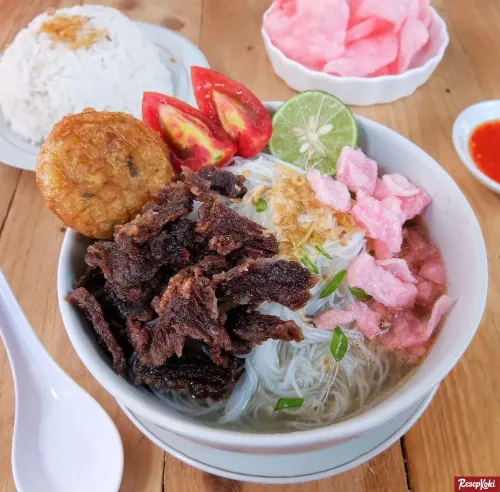

Soto Padang
Bahan:
- 500 gram daging sapi (campur dengan tulang supaya kaldunya lebih kerasa).
- 2 liter air.
- minyak goreng untuk menumis.
Bahan cemplung:
- 2 batang sereh digeprek.
- 3 lembar daun salam.
- 4 lembar daun jeruk.
- 5 buah kapulaga.
- 8 kelopak bunga lawang.
- 5 buah cengkeh.
- 4 cm kayu manis.
- 2 batang daun bawang diiris.
Bumbu halus:
- 10 siung bawang putih.
- 6 buah bawang merah.
- 3 ruas lengkuas.
- 2 ruas jahe.
- 1 ruas kunyit.
- 1 sdt pala bubuk.
- 1 sdm ketumbar bubuk.
- 2 sdt lada bubuk.
- garam.
Bumbu pelengkap:
- sohun siram dengan air panas, rendam sebentar, angkat dan tiriskan.
- perkedel kentang.
- kerupuk merah.
- sambal.
- seledri diiris halus.
- bawang goreng.
- kecap.
- cuka.
Cara Memasak:
- Rebus daging sampai mendidih keluar buihnya, buah buih yang mengapung, masukkan semua bahan cemplung, lanjutkan merebus sampai daging empuk, masukan daun bawang, tunggu layu, matikan kompor, angkat daging, dan tunggu dingin.
- Panaskan minyak goreng, tumis bumbu halus sampai wangi, campur bumbu yang sudah ditumis ke dalam air rebusan daging, masak sebentar sampai bumbu dan kaldu menyatu. koreksi rasa.
- Iris tipis daging yang sudah direbus, kemudian goreng sampai garing.
- Tata sohun, daging didalam mangkok, siram dengan kuah soto, beri kerupuk, perkedel, seledri dan sambal.
- Sajikan.